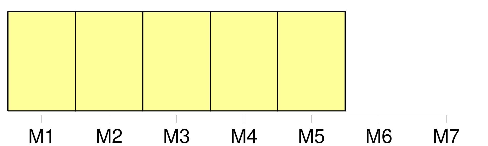

Longueur nb maillons : 5 mentions |
 |
Au delà du canal, entre les maisons que séparent des chantiers, le grand ciel pur se découpait en plaques d'outremer, et sous la réverbération [du soleil] , les façades blanches, les toits d'ardoises, les quais de granit éblouissaient. [339 phrases] À Falaise, le neuvième jour de son voyage, Pécuchet prit un cheval de renfort, et jusqu'au coucher [du soleil] on marcha bien. [92 phrases] Pour se garantir [du soleil] , Bouvard portait sur la tête un mouchoir noué en turban, Pécuchet sa casquette ; et il avait un grand tablier avec une poche par devant, dans laquelle ballotaient un sécateur, son foulard et sa tabatière. [116 phrases] Tout le long de l'année, du matin jusqu'au soir, par la pluie, par [le soleil] , on voyait l'éternel banneau avec le même homme et le même cheval, gravir, descendre et remonter la petite colline. [55 phrases]
Mais il planta des passiflores à l'ombre, des pensées [au soleil] , couvrit de fumier les jacinthes, arrosa les lis après leur floraison, détruisit les rhododendrons par des excès de rabatage, stimula les fuchsias avec de la colle forte, et rôtit un grenadier, en l'exposant au feu de la cuisine. |

|
Il est possible de télécharger la ressource sur la page Ortolang |
Si vous avez des questions ou vous voyez des erreurs, merci d'envoyer un mail à silvia.federzoni89@gmail.com |